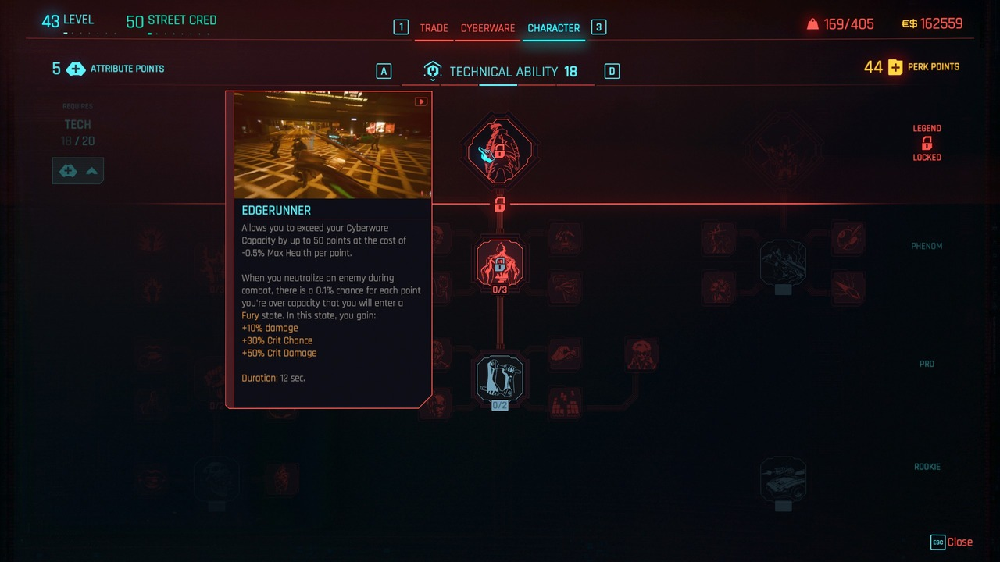
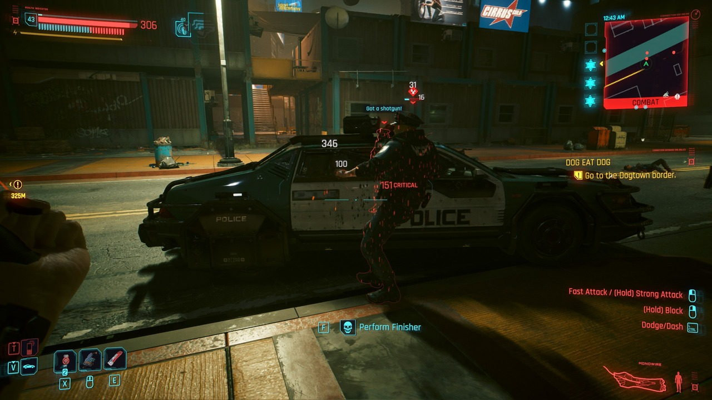
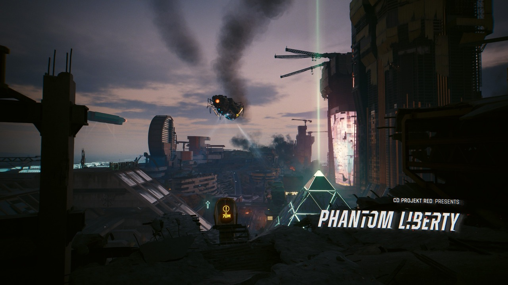
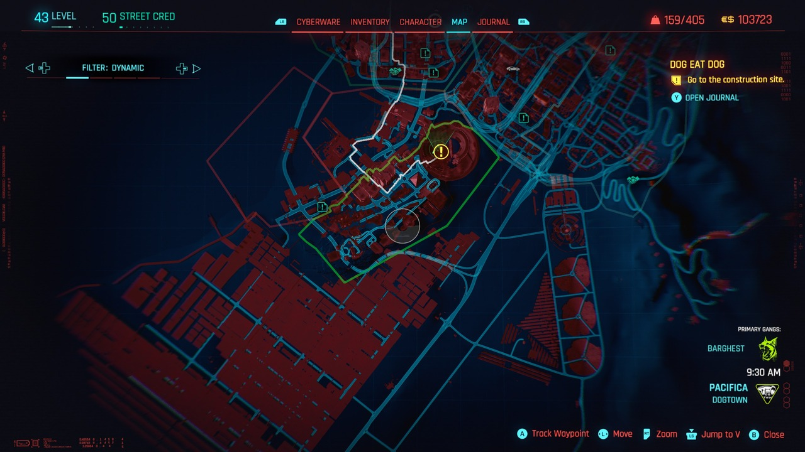
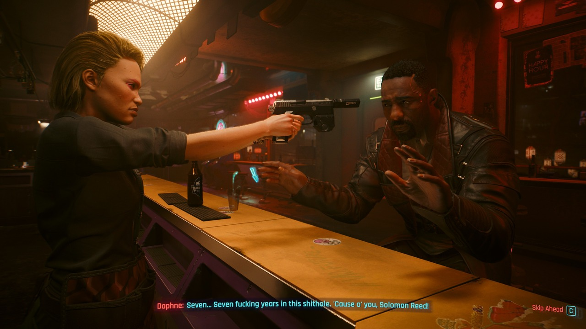
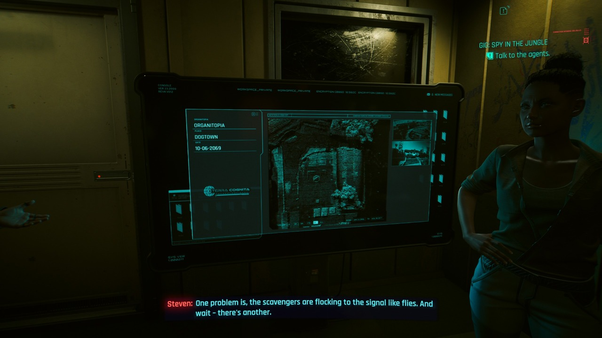

Cốt truyện mới lạ cuốn hút
10464 commentVào Tháng 9/2022, CD Projekt Red tiết lộ sự ra mắt của bộ hoạt hình ăn theo Edgerunner, bản cập nhật 1.6 và công bố phần mở rộng đầu tiên và duy nhất của Cyberpunk 2077 mang tên Phantom Liberty. Trước nỗ lực chỉnh sửa không ngừng nghỉ của nhà phát triển, cũng như việc Edgerunner đã gây được tiếng vang khá lớn với người xem đại chúng, ngọn lửa hi vọng lại được nhen nhóm giữa phần lớn người hâm mộ trước phần mở rộng này.
Version 2.0 - Bình cũ rượu mới
Một trong điểm lớn đi kèm với Cyberpunk 2077: Phantom Liberty đó là sự “cập bến” của phiên bản 2.0. Tuy được cung cấp dưới dạng bản cập nhật miễn phí cho toàn bộ người chơi – kể cả với những ai không sở hữu bản mở rộng này, nhưng chính 2.0 đã tái định hình cách mà game thủ có thể tiếp cận Cyberpunk 2077.
Đầu tiên, quan trọng nhất đó là sự cải biên của hệ thống Perk và Cyberware. Trước đây, việc nâng cấp thường có chất lượng “trồi sụt” khi một số quá bá đạo, trong khi đó một số lại không hề tạo được điểm nhấn trong quá trình chơi (chẳng hạn như toàn bộ bảng Breach Protocol gần như… chẳng có tác dụng gì!) hoặc mang tính bắt buộc một cách gượng ép (việc phải nâng cấp Crafting để có thể tạo ra trang bị xịn hơn) cũng khiến cho việc xây dựng nhân vật cực kỳ khó chịu.
Hiện tại, Perk đã được tinh giản lại, tuy sở hữu số lượng ít hơn nhưng… nâng cái nào là thấm cái đó. Đồng thời, các lối chiến đấu trong Cyberpunk 2077 đã hoàn toàn được cách tân và phân bố rõ ràng hơn cho từng loại thuộc tính, mang đến hàng tá những lựa chọn để bạn thỏa thích trải nghiệm. Giáp và khả năng chống chịu sát thương cũng không còn phụ thuộc vào quần áo mà chủ yếu sẽ dựa vào cyberware, giờ đây, bạn phải cân nhắc và lựa chọn hướng chơi cũng như “độ hàng” một cách kỹ càng hơn.
Người viết vốn dùng lối chơi Netrunner (nâng tối đa Intelligence và một chút Cool), có thể nói đây là một kiểu chơi cực “bá đạo” khi có thể hạ gục hàng tá địch từ xa mà không phải đánh đổi quá nhiều. Sau bản cập nhật này, Netrunner và hack đã không còn sở hữu sức mạnh “vô đối” như trước, nhưng lại được CD Projekt Red “trang bị” cho khả năng kết hợp đánh giáp lá cà như Lucy trong Edgerunner khi nâng cấp nhánh Monowire, hay khả năng chiến đấu từ xa với Smart Weapon và Overclock. Bất kể là người mới hay “ma cũ”, Cyberpunk 2077: Phantom Liberty đều có thể mang đến những trải nghiệm hết sức mới mẻ cho người chơi.
Trải nghiệm thật sự mới mẻ
Tiếp đến, hệ thống truy nã (Wanted) cũng “cập bến” cùng phiên bản 2.0. Lực lượng cảnh sát đã được bố trí một cách dày đặc hơn nhiều so với bản gốc, và bạn cũng có thể hack hoặc tấn công họ thoải mái. Bạn sẽ bị truy nã khi tấn công cảnh sát hoặc thường dân, cướp xe của lực lượng hoặc bước vào khu vực cấm. Lực lượng MaxTac cũng sẽ xuất hiện khi bạn đạt 5 sao (tương tự lực lượng SWAT của Grand Theft Auto V) và đến mức này thì việc chạy thoát cũng là một trở ngại cực lớn cho người chơi. Mật độ dân số và xe cộ cũng được tùy chỉnh dựa theo từng mốc thời điểm trong ngày để phản ánh đúng sự tấp nập vốn có của Night City. Các nhân vật trong game (NPC) cũng phản ứng và tương tác với các sự kiện một cách tự nhiên hơn – khi bị tông xe, khi xảy ra nổ súng giữa các phe phái, khi cảnh sát hay lính canh xuất hiện.
Nếu như trong quá khứ, Cyberpunk 2077 không có quá nhiều nội dung để người chơi có thể “dạo chơi” khi hoàn thành mạch truyện chính, thì hiện tại, việc chạy vòng vòng và “làm trò con bò” cũng mang lại những khoảng thời gian đáng nhớ tại Night City.
Cuối cùng, một điểm đáng chú ý khác đó chính là cơ chế lái xe. Tuy hệ thống vật lý của Cyberpunk 2077 còn khá nhiều “điểm trừ” mà cốt lõi nằm ở khung phần mềm REDengine, CD Projekt Red đã cải tiến một chút để cho việc tăng tốc và phanh xe được tốt hơn một chút. Bù trừ cho cơ chế lái xe yếu kém của mình, giờ đây bạn đã có thể chiến đấu trên xe bằng cách sử dụng súng lục, súng tiểu liên, vũ khí cận chiến (chỉ dành cho xe máy). Thậm chí, một số loại xe còn được “độ” thêm… súng và hỏa tiễn! Cùng với đó, nhiều nâng cấp trong Perk cũng cho phép bạn đẩy mạnh lối chơi “quái xế” của mình khi cho phép hack vào xe đối phương, hay sử dụng Sandevistan trong lúc lái xe…
Những bóng ma thèm khát tự do
Khi ra mắt lần đầu vào cuối năm 2022, dù bị chê thậm tệ bởi sự thiếu chỉn chu và lỗi “ngập mặt” của Cyberpunk 2077, không ai có thể phủ nhận rằng game sở hữu phần nội dung cực kỳ cuốn hút. Với Cyberpunk 2077: Phantom Liberty, CD Projekt Red không chỉ kế thừa những điểm mạnh vốn có của bản gốc, mà còn nâng tầm trò chơi lên hoàn toàn. Người chơi bắt đầu phần nội dung mở rộng này khi được So Mi – một Netrunner của chính phủ liên lạc để hỗ trợ giải cứu tổng thống Tân Hoa Kỳ (New United States – NUS). Hành trình này dẫn bạn đến Dogtown, khu vực mới nằm ngay trong quận Pacifica của Night City.
Nếu như mỗi quận trong Night City đều mang đến một dáng vẻ riêng biệt, thì Dogtown lại chính là một “tiểu” Night City, khi mà sự tương phản giàu nghèo được phân hóa cực kỳ rõ rệt – với những tòa nhà chọc trời đầy hoa lệ mà chỉ người có quyền lực mới có khả năng chi trả, và sâu dưới mặt đất là những kẻ khốn cùng phải sống cảnh không nhà, sống trong bom đạn như hệ quả của việc đấu đá giữa các băng đảng và đội quân tự phong của tên độc tài Kurt Hansen.
Chính hình ảnh của Dogtown như đã dự báo trước tương lai và số phận của những con người ở đây, tất cả như bị cuốn theo sức mạnh của tiền tài và quyền lực mà đánh mất nhân tính. Hai nhân vật chính của Cyberpunk 2077: Phantom Liberty, Reed và So Mi, cũng không phải ngoại lệ.
Bản đồ cực kỳ rộng lớn
Vốn là các đặc vụ của chính phủ, cả hai sẽ đưa bạn qua hàng loạt những nhiệm vụ “đậm chất 007” với vô vàn những loại nhiệm vụ độc đáo mà bạn không thể tìm thấy trong bản gốc, như đột nhập và trà trộn vào bữa tiệc của Kurt, giả dạng và tính cách của nhân vật khác để thu thập thông tin…
Mở đầu với những khung cảnh hành động đầy hào hứng để dẫn dắt bạn vào cuộc chơi chính trị tại Night City, người chơi dần được đưa tới những phân đoạn kịch tính khi phải lén lút đánh cắp thông tin trà trộn vào hàng ngũ của Kurt, và cuối cùng là những phút cao trào khi các lựa chọn rẽ nhánh được đưa ra, mà bạn không thể nào biết nên “chọn lý trí hay nghe con tim”. Với hai phân đoạn quan trọng mà người chơi cần lựa chọn, những quyết định này đều ảnh hưởng cực lớn đến kết cục của chuỗi nhiệm vụ này, và CD Projekt Red đã chuẩn bị tận 4 kết cục tương ứng cho mỗi lựa chọn của người chơi. Khác với bản gốc, mỗi kết thúc đều mang lại cảm xúc riêng, và luôn có người phải ngã xuống. Dĩ nhiên, đây là Night City, sau cùng, sẽ chẳng có kết cục tốt đẹp nào dành cho mọi người, và ước nguyện của người này sẽ phải trả giá bằng mạng sống của kẻ khác.
Vô vàn nội dung phụ chất lượng
Không chỉ phần nội dung chính của Cyberpunk 2077: Phantom Liberty được nhà làm game “chau chuốt” kỹ lưỡng, mà các nhiệm vụ phụ (Gigs) tại Dogtown cũng được sở hữu trong mình một chất lượng và thời lượng đáng kính ngạc.
Tất cả đều được thể hiện qua từng phân cảnh, từng hành động và từng câu thoại xuất hiện trong trò chơi, bất kể lớn hay nhỏ. Điều này không chỉ đúng cho Reed hay So Mi, mà chính Johnny Silverhand cũng có một sự phát triển nội tâm khá rõ rệt trong quá trình làm nhiệm vụ, dù thời lượng của Johnny trong bản mở rộng này không thật sự đáng kể.
Để tô điểm cho phần “nhìn” và phần “hồn”, thì phần “nghe” của trò chơi cũng được làm hết sức chỉn chu. Mỗi đoạn nhạc vang lên trong những thời khắc then chốt đều mang lại những cảm xúc riêng biệt mà bạn sẽ không thể nào quên được, đặc biệt là những phân cảnh cuối cùng.
Tổng Kết
Cùng với sự góp mặt của bản cập nhật 2.0, Phantom Liberty đã mang lại một trải nghiệm thật sự toàn vẹn mà Cyberpunk 2077 vốn phải có khi ra mắt 3 năm trước. Với lối chơi phong phú, toàn vẹn; các phân cảnh hành động kịch tính và những lựa chọn “tiến thoái lưỡng nan” khiến chúng ta phải suy ngẫm về một thế giới phản địa đàng đầy cay đắng, nơi không ai có thể tìm ra lối thoát cho chính mình.

topgamer June 21, 2024
Review hay, đúng trọng tâm
Replysuperstar_9xSeptember 11, 2023
Xịn ghê
Reply